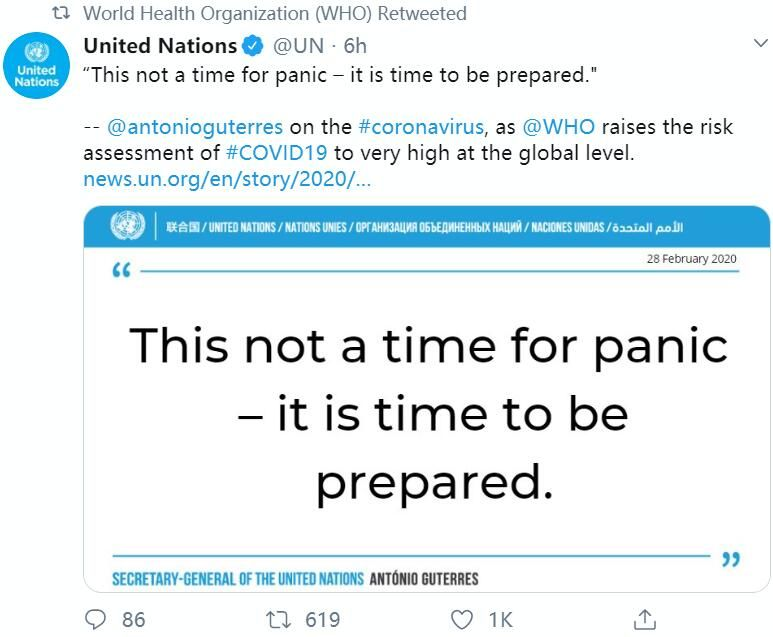
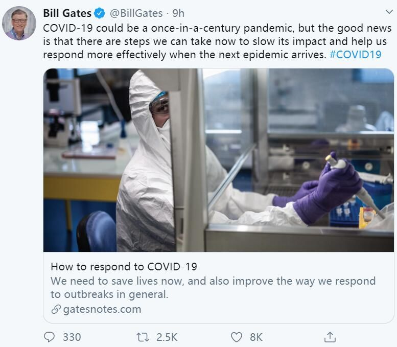
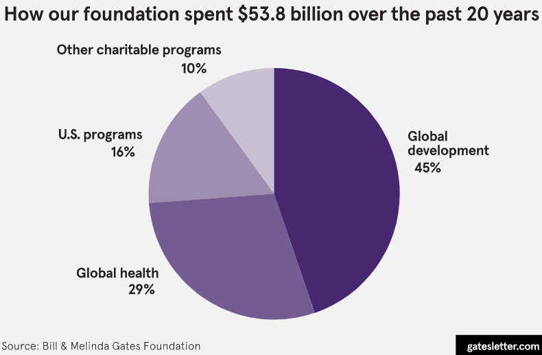

真假“新冠疫苗”：专家呼吁谨慎发布防治信息，别轻信“有效药”
原文链接 备份链接 药物、疫苗的筛选这样一个万众期待的大事，更需要准确传递信息，以减少公众误解 图/新华 文 |《财经》赵天宇 编辑 | 王小 2020年2月25日，又传出一款新冠肺炎治疗的“有效药”—— 新冠口服疫苗。 消息是天津市 …

日内瓦时间 2 月 28 日，世界卫生组织总干事谭德塞在媒体例行会上宣布，WHO 将新冠肺炎疫情的全球风险级别从“高风险”提高至“非常高”。谭德塞表示，这是因为目前新冠肺炎疫情在全球多个国家蔓延，中国境外已有超过 4,300 例确诊病患，并且仍有越来越多的国家出现疫情，所以提高全球风险级别。
在更早的媒体会上，谭德塞就已经表态：全球疫情防控进入“决定性时刻”。世卫组织呼吁每个国家都必须为所有可能发生的情况做好准备，任何国家都不应抱有本国不会出现病例的侥幸心理。
目前新型冠状病毒是否已达到“大流行”的程度，也是公众关心的话题。实际上，世卫组织在决定使用 “大流行” 一词来描述某一流行病时，并不代表警戒程度的变化，而是取决于对病毒的地理传播、所引起疾病的严重程度，以及其对整个社会的影响的持续评估。
谭德塞也表示：我们应该做好其可能发展为全球流行病的准备。但关键问题并不是该关注使用什么词来描述疫情，使用“大流行”与否，不会干扰疫情的任何一次感染，也不会有助于拯救任何人的生命。现在是所有国家、社区、家庭和个人集中精力做好准备的时候。

图 | 世卫组织转发联合国的社交媒体动态：“现在不是恐慌之时，是做好准备的时候。”（来源：Twitter）
不过，在比尔·盖茨看来，新冠病毒可能是百年一遇的“大流行”疫情。也是 2 月 28 日，他在《新英格兰医学杂志》（NEJM）上发表观点类文章：“应对 Covid-19 ——百年一遇的流行病？”面对正在全面蔓延的疫情，比尔·盖茨认为，世界领袖都承担着重要责任：既要加速创新研发，拯救更多生命，也要联合起来，从长远改善全球大流行病应对机制。
他表示，不论面对任何危机，领导人始终肩负两个同样重要的职责：一是解决眼前的问题，二则是防止问题再次发生。新冠肺炎疫情就是一个有力的证明。我们不仅需要拯救生命，也要从整体上改善应对疫情爆发的方式。前者更加紧迫，而后者从长远来看至关重要。
文中还提及，比尔及梅琳达·盖茨基金会在近年来始终关注着如何让世界提高疫情应对能力，已经投入大量的资源，帮助世界做好应对此类疫情的准备。而眼下的疫情危机，比尔·盖茨希望情况不会发展得更为糟糕，但人们应该做好充分准备。
新冠肺炎的威胁主要基于两点原因：一方面，除了已有健康问题的老年人之外，新冠肺炎还会造成健康的成年人死亡。据目前数据显示，新型冠状肺炎的病死率在 1% 左右，而这一数据介于 1957 年大流感（病死率 0.6%）和 1918 年大流感（病死率 2%）之间，说明它比典型的季节性流感要严重数倍。
另一方面，此次新冠病毒的传播力很强。平均每个感染者会传染 2~3 人，形成指数级增长。并且已有确切证据表明，它可以通过轻症甚至无症状的患者传播。这意味着，新冠肺炎将比中东呼吸综合征（MERS）和非典型性肺炎（SARS）更难控制，因为 MERS 和 SARS 只通过有症状患者传播，且传播力低很多。

图 | 比尔·盖茨在社交媒体上表示，新冠病毒可能是百年一遇的“大流行”疫情，但好消息是，我们现在可以采取一些措施来减缓其影响，并帮助我们在下一次大流行到来时更有效地作出反应；随后也放上了这篇文章的链接（来源：Twitter）
比尔·盖茨在文中强调：各个国家和地方政府，以及公共卫生机构应该在未来几周内采取行动，以便控制新冠疫情的传播。并且，在保护好本国公民之外，有能力的国家政府应该帮助中低收入国家做好应对疫情的准备。
“很多中低收入国家的卫生系统本已相当薄弱，而新型冠状病毒会很快让他们不堪重负。此外，鉴于更富裕国家自然会将本国国民的利益放在首位，相对贫困的国家就会更加缺乏政治和经济上的资本来获取支持。”他说道，“通过帮助非洲和南亚的国家做好准备，我们不仅可以拯救生命，同时还能减缓病毒的全球扩散。”
同时，他还呼吁要加快针对新冠肺炎的治疗和疫苗开发工作。
对于上述问题，比尔·盖茨已通过比尔及梅琳达·盖茨基金会投入众多大量资金，将投入最高 1 亿美元支持全球应对新冠肺炎疫情，其中很大一部分将用于支持中低收入国家。而由惠康信托基金会和比尔与美琳达·盖茨基金会支持下成立的，流行病防范创新联盟（CEPI），作为一个旨在通过加速疫苗研发防控流行病的组织，现已在准备将八种具有前景的候选疫苗投入临床试验。如果这些疫苗中的一个或多个在动物模型中被证明安全有效，它们最早在六月便可以进入大规模临床试验。
在比尔·盖茨写完针对此次疫情的看法与建议后，宏观层面就系统性问题也给出了看法，表示仍需做出调整，确保更高效地应对下一次大流行病疫情。比如，帮助中低收入国家加强其卫生保健系统；建立一个世界性的病例数据库，并要求各国分享信息；还应建立一个可以快速开发安全、有效的疫苗和抗病毒药物的系统，以保证可快速通过审批，并实现量产。
除了上述技术解决方案之外，他表示，改变还需要外交方面的努力，开发抗病毒药物和疫苗涉及大量跨越国界的临床试验和授权协议，应推动国际合作和数据共享。“我们应该通过全球平台来推动各方针对有前景的候选疫苗和抗病毒药物在研究重点和试验方案等方面快速达成共识。”比尔·盖茨说道。

图 | 比尔及梅琳达·盖茨基金会在过去 20 年中 538 亿美元的捐款比例（来源：Bill and Melinda Gates Foundation）
诚然，所有建议都离不开资金问题。他表示，政府需要投入资金，是因为大流行病相关产品是非常高风险的投资，公共资金有助于将药企的风险最小化，从而确保他们得以全身心投入工作。而且考虑到疫情可能带来的经济损失，即便抗击“大流行”病的投资不是一笔小数目，但想要解决问题，这是必须的投资。
最后，他强调：政府和行业需要达成协议，即“在大流行病期间，疫苗和抗病毒药物不能简单地卖给出价最高的买家，而应该让身处疫情中心及最有需要的人们以可负担的价格买到。”这不仅是正确的做法，也是阻断传播和防止疫情继续蔓延的正确策略。
在疫情不断扩散之时，美国总统特朗普却在 28 日的保守派政治行动会议（Conservative Political Action Conference, CPAC 是一年一度的政治保守派活动人士参加的会议，从全美民选官员）中表示：当下对新型冠状病毒疫情传播的担忧是“新的骗局”，同时对集会的人群报出了一个低于美国统计确诊人数的感染病患数据。
这番演讲在社交媒体上引发了众多美国人的吐槽，特朗普对公关卫生问题不重视态度引发了网友的不满。早前在 2 月中旬特朗普向国会提交的 2021 年预算提案中，首先就提出将美国国立卫生研究院（National Institutes of Health，NIH）的财政削减 7 %（29.42 亿美元），总额下降至 369.65 亿美元。
当时美国的生物医学研究团体便纷纷表示，对该预算提案感到十分沮丧。美国医学院协会首席科学官罗斯·麦金尼更是在社交媒体表态，称“这对美国的生物医学研究将是毁灭性的打击。”

图 | 社交媒体上美国民众吐槽特朗普关于新型冠状病毒是“骗局”的言论（来源：Twitter）
据《华盛顿邮报》刚刚的报道称，继美国加利福尼亚出现两例感染途径不明病例后，俄勒冈州也首次出现了一位感染途径不明新冠肺炎患者，该州卫生部门官员称，患者来自华盛顿县，没有去过疫情发生地，也没有和已知新冠肺炎病人接触过。
新冠肺炎疫情目前正持续在全球范围内蔓延，希望各国政府能够听从世卫组织的呼吁，借鉴比尔·盖茨的有关建议，将这次极可能是“大流行”病的肺炎疫情控制住。正如比尔·盖茨在前述文章结尾处的提醒：“全球领导人应当立即行动，刻不容缓。”
-End-
参考：
https://www.gatesnotes.com/Health/How-to-respond-to-COVID-19?WT.mc_id=20200228175011_COVID19_BG-TW&WT.tsrc=BGTW&linkId=83234892
https://www.nejm.org/doi/full/10.1056/NEJMp2003762


原文链接 备份链接 药物、疫苗的筛选这样一个万众期待的大事，更需要准确传递信息，以减少公众误解 图/新华 文 |《财经》赵天宇 编辑 | 王小 2020年2月25日，又传出一款新冠肺炎治疗的“有效药”—— 新冠口服疫苗。 消息是天津市 …
原文链接 备份链接 设在新冠肺炎定点医院里心理咨询室。 记者：杨舒鸿吉 “ 在疫情高度紧张的时候，如何在保证自身安全的前提下，以最有效的办法进行心理干预，此前并无经验可循。能不能行得通，全靠自己摸索。 ” 新冠肺炎疫情在湖北省爆发之后，身 …
原文链接 备份链接 2 月 29 日，国家卫健委网站发布了《中国-世界卫生组织新型冠状病毒肺炎（COVID-19）联合考察报告》，全文 1.6 万余字，本文为摘要版。 联合考察组由来自中国、德国、日本、韩国、尼日利亚、俄罗斯、新加坡、美国 …
原文链接 备份链接 文 | 谢九 在中国的疫情逐渐缓和之际，中国之外的疫情却突然爆发升级。2月25日以来，中国境外新增的确诊病例已经超过了中国境内，新冠肺炎疫情进入全球化的2.0阶段。 目前，韩国的新增确诊人数已经超过了中国，日本、伊朗、 …
原文链接 备份链接 这是一种全新的病毒，还有很多未知。它代表了一种演进的公共卫生突发事件，我们还会在其他国家看到更多确诊病例。中国对传染病以及卫生突发事件的诊断、治疗和管理能力在过去20年得到了显著的提升。 文 |《财经》记者 江玮 发自 …